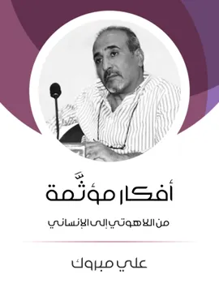

أفكار مؤثَّمة: من اللاهوتي إلى الإنساني

قراءة عربية أصلية محددة النطاق في الصفحات 9، 10 من ملف PDF المرتبط، وليست تلخيصا كاملا للكتاب. نناقش ما تدعمه هذه المقاطع فقط.
من التحديث المشوه إلى الأسلمة المشوهة
تكشف التوطئة عن أطروحة مركزية: ما يجري ليس محض نهاية لأنظمة الفساد والاستبداد بل نهاية لمشروع تحديث مشوه استمر قرنين واستنفد طاقته، وتفرع تشوهه عن آلية التعاطي مع الحداثة بوصفها نموذجًا معطى جاهزًا يُفرض إكراهيًا على مجتمعات خارج سياق تبلورها التاريخي والمعرفي. والطريقة الراهنة في استدعاء الإسلام كبديل لا تتجاوز حدود السعي لفرضه كمنظومة جاهزة على الواقع؛ وإذ تبدو الآلية التي أنتجت الحداثة المشوهة هي ذاتها التي يجري بها التعاطي مع الإسلام، فيمكن القطع بأن التجربة لن تتمخض إلا عن أسلمة مشوهة تمامًا كالتحديث الذي سبقها.
زاوية وحدود القراءة
قراءة في مطلع الفصل الأول «مدخل إلى مقاربة التراث وقراءته» من الصفحتين 9 و10، لا في فصول الكتاب كاملة. مصطلحا «التحديث المشوه» و«الأسلمة المشوهة» من نص المؤلف نفسه، وسياق الكتابة بعد أحداث عربية كبرى كما يشير النص. تفاصيل مقاربة التراث الموعودة في الفصل خارج نطاق المقروء.
الطبعة والقراءة
هذه النسخة من الكتاب صادرة ومتاحة مجانًا بموجب اتفاق قانوني بين مؤسسة هنداوي وأسرة السيد الدكتور علي مبروك. النسخة الصوتية صادرة ومتاحة مجانًا بدعم من وفد الاتحاد الأوروبي في مصر.
تنزيل PDF المجاني ↓ القراءة والمصدر الرسمي ↗